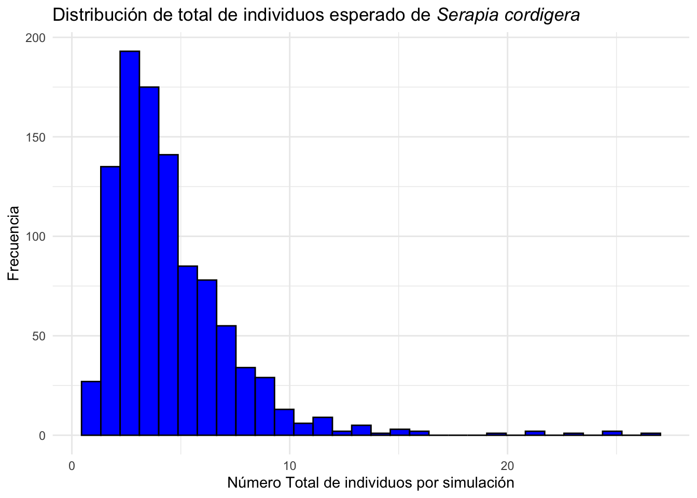
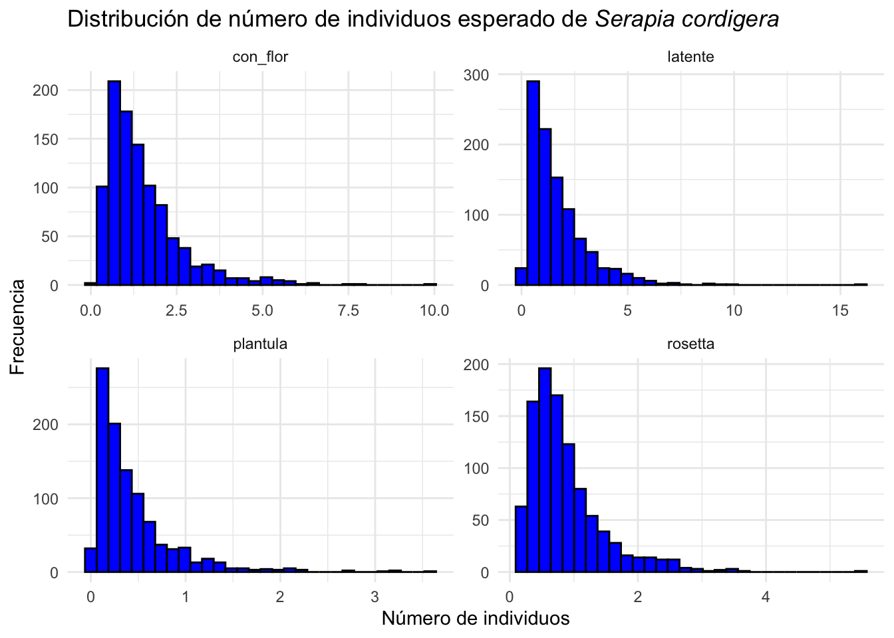
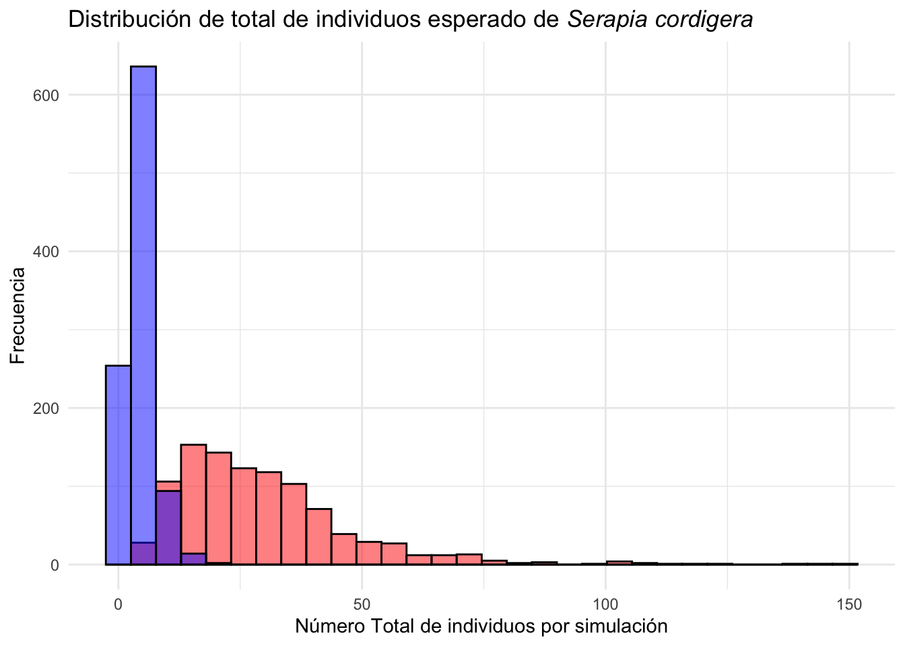
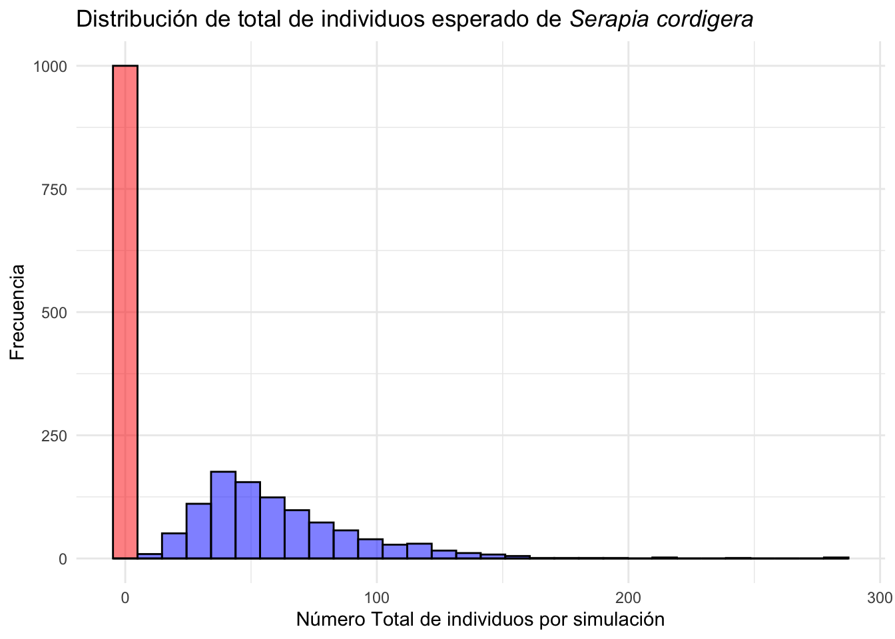
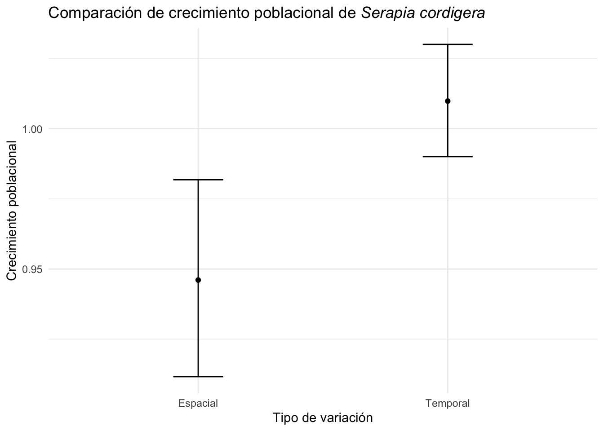
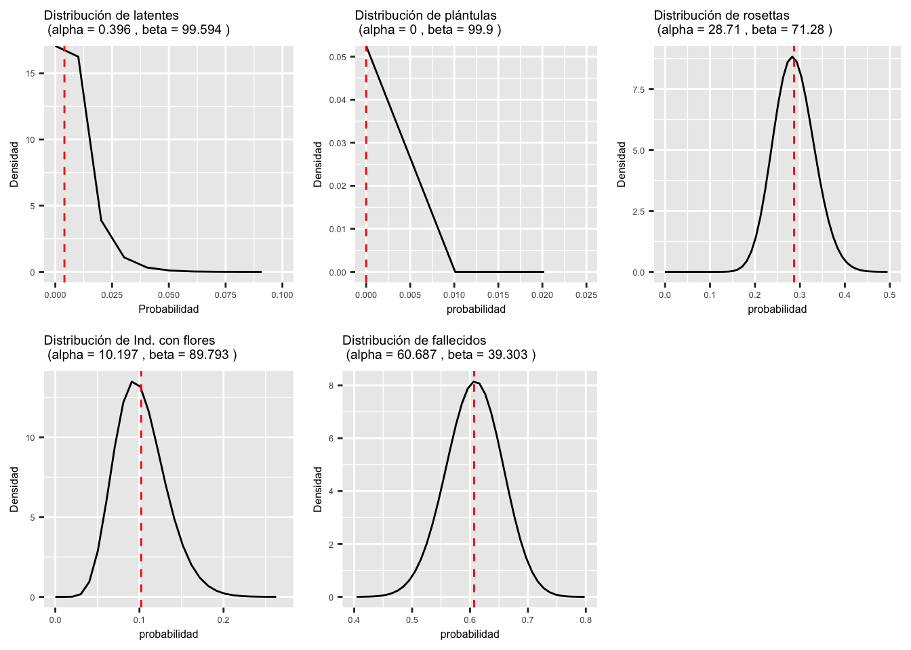

Capítulo 18 Métodos de Simulaciones y estimaciones de intervalos de confianza
Por: Raymond L. Tremblay
El termino biología pudiese ser un sinónimo de variación biológica. No hay dos organismos iguales, ni siquiera gemelos completamente idénticos. La variación biológica es una característica fundamental de la vida y es la base de la evolución, no puede haber evolución sin variación. Cuando se considera los individuos, por ejemplos humanos, fácilmente reconocemos variación, en tamaño, color de ojos, susceptibilidad a cáncer o infección y efecto que tiene el ambiente (por ejemplo la dieta o acceso a la educación) entre muchos factores que impacta la supervivencia o crecimiento y reproducción. Pero desafortunadamente cuando se considera los animales y plantas de una misma especie frecuentemente se obvia la variación en los análisis. Podemos observar variación a múltiples niveles en una misma especie
- Variación sub-individual
- Variación entre individuos
- Variación entre poblaciones
- Variación entre tiempo
Todos estos componentes de variación tendrán impacto en la confianza de los estimados de los parámetros de la matriz de transición y el crecimiento poblacional en adición del comportamiento de la población en tiempo. Hay un componente que frecuentemente se deja por olvido es el el efecto de la variación en tamaño de muestra pequeña en los estimados de los parámetros de la matriz de transición y el crecimiento poblacional.
18.0.1 Componentes de Variación
18.0.1.1 La variación sub-individual
La variación sub-individual es la variación que se observa en un individuo. Por ejemplo, la variación en el tamaño o la cantidad de hojas, flores, frutos, semillas dentro del mismo individuo. Este tipo de variación es común en plantas y es un componente importante de la variación total pero raramente se considera en los análisis. Carlos Herrera ha demostrado claramente que este componente no solamente es parte de la variación total de las especies pero es importante para entender los procesos ecológicos y evolutivos (Herrera 2009). Esta variación al conocimiento de los presentes autores nunca ha sido incluido en análisis de dinámica poblacional y integrado dentro un PPM.
18.0.1.2 La variación entre individuos
La variación entre individuos es la diferencias que se observa entre individuos de una misma población o en diferentes poblaciones. Por ejemplo, la variación en el tamaño de los individuos, cantidad de hojas, cantidad de flores, cantidad de frutos entre individuos de una misma población influye en la probabilidad de sobrevivir, crecer y reproducirse. La variación entre individuos de diferentes tamaños o etapas impacta grandemente la supervivencia y reproducción de los individuos. Los trabajos de Harper y otros han demostrado que esa variación es común en las plantas (Harper et al. 1977) y tipicamente es más importante que la edad de los individuos (ref).
18.0.1.3 La variación entre poblaciones
La variación entre poblaciones es la variación que se observa entre poblaciones de una misma especie. Poblaciones distintas pudiese ser influenciada por la diferencias abióticas y interacciones biótica única a cada población. Esa variación pudiese influenciar la dinámica de cada población y la dinámica de la especie en general. Esa diferencias entre poblaciones pudiese ser influenciado por las diferencias genéticas entre poblaciones, variación en el ambiente, variación en la interacción biótica, variación en la historia de la población, entre otros factores, o plasticidad fenotípica que se define como la interacción del ambiente sobre la expresión genética. Sin duda las variables abióticas y bióticas pueden influenciar las transiciones, estasis y reproducción de forma diferencial entre las diferentes etapas del ciclo de vida de la especie.
18.0.1.4 La variación entre tiempo
Este componente de variación incluye la variación típicamente relacionado a la variación abiótica que cambia de un periodo de tiempo a otro, por ejemplo el efecto de la cantidad de lluvia, números de días sin lluvia, temperatura. Pero no se debería limitar a considerar solamente la variación abiótica en tiempo ya que la variación biótica también puede cambiar de un periodo de tiempo a otro. Por ejemplo la densidad y/o composición de especies en una comunidad cambia de un periodo de tiempo alrededor de la especie de interés y pudiese influenciar la dinámica estimado por la parámetros de la matriz. Por ejemplo considera la variación en presencia de herbívoros o patógenos que cambia de un periodo de tiempo a otro y pudiese influenciar la dinámica de la especie de interés. Por consecuencia la variación en tiempo es mucho más que la variación abiótica en tiempo. Allí uno también tiene que incluir el efecto de bonanza (eventos raros positivos, ejemplo: reclutamiento excepcional en unos años) y catástrofes (eventos raros negativos, ejemplo: huracanes, mortandad de un hospedero) que pudiese influenciar la dinámica de la especie de interés.
18.0.1.5 Variación en tamaño de muestra pequeña
La gran mayoría de los estudios usando MPP son para evaluar la probabilidad de supervivencia en una especies en peligro de extinción (Do we have the data in COMPADRE to answer this?). La razón principal de estos estudios es que queda muy pocos individuos en la población o pocas poblaciones y esas poblaciones son considerando a riesgos.
Por ejemplo si tuviésemos en una población solamente un adulto y este adulto sobrevive a su de un año a otro entonces la probabilidad de supervivencia es 1.0. Pero si tuviésemos solamente un adulto y este adulto muere entonces la probabilidad de supervivencia es 0.0. La probabilidad de supervivencia es 1.0 o 0.0 respectivamente y otros valores no son posibles, pero la interpretación biológica es sesgada, porque ya solamente dos alternativas. Pero tuviésemos 1,000 o 10,000 individuos es muy poco probable que todos se mueren o todos sobreviven, y hay muchas alternativas posibles. Este es un ejemplo extremo pero ilustra claramente el problema de estimar la probabilidad de supervivencia y transiciones en una población con un tamaño de muestra pequeña y puede resultar en estimados sesgados.
En las próximas secciones vemos métodos de simulaciones y estimaciones de intervalos de confianza para abordar la variación biológica en tiempo y espacio y la variación por el tamaño de muestra pequeña.
18.1 Introducción a los métodos de simulaciones
Los métodos de simulaciones para estimar la variación en los parámetros tanto de la matriz como el crecimiento poblacional varia mucho. Lo que es consistente es que se utiliza dados disponible para hacer simulaciones y estimar la variación en los parámetros. En otra palabra se usa la variación entre los elementos de múltiples matrices de transición en tiempo o espacio o el tamaño de muestra para hacer simulaciones y estimar la variación en los parámetros. La manera de expresar la variación puede asumir diferentes formas, por ejemplo, la variación en los parámetros de la matriz de transición puede ser expresado como una distribución normal, una distribución de Poisson, una distribución binomial o beta, entre otros. Reconociendo el tipo de variación en los parámetros de la matriz de transición es importante para escoger el método de simulaciones y estimaciones de intervalos de confianza y reconocer sus limitación y su interpretación.
18.1.1 Estocasticidad espacial
En este caso vemos el efecto de la variación espacial en la probabilidad en los estimados. Aquí nos interesa descubrir y cuantificar cuan variable son las poblaciones una del otro. El obejtivo es determinar si las poblaciones se comporta similar una del otro o varía mucho de un sitio al otro.
18.1.1.1 Entrada de datos
El primer paso es definir la diferentes matriz, una por cada periodo de tiempo. En el siguiente script se enseña como entrar los datos para múltiples matrices en un solo objeto. Nota que es una lista de matriz.
Los datos provienen de un estudio de la dinámica de una población de Serapia cordigera de 1999 al 2012 evaluando el impacto antropogénico sobre la dinámica de la población (Pellegrino and Bellusci 2014). En este caso se emplea solamente 6 matrices de transición de la población de Serapia cordigera en 1999, tres de estas son poblaciones que tienen impacto antropogénico (A1, A2 y A3) y tres poblaciones naturales, sin impacto antropogénico (N1, N2, N3).
Serapia<-list(
A1_1999=matrix(c(
0.745, 0.152, 0.452, 0.564,
0.125, 0.000, 0.000, 0.000,
0.000, 0.321, 0.205, 0.342,
0.200, 0.365, 0.205, 0.185
),
nrow=4, byrow=TRUE,
dimnames=list(c("latente", "plantula", "rosetta", "con flor"),
c("latente", "plantula", "rosetta", "con flor")
)
),
A2_1999=matrix(c(
0.648, 0.203, 0.414, 0.604,
0.188, 0.000, 0.000, 0.000,
0.000, 0.342, 0.198, 0.377,
0.242, 0.264, 0.225, 0.191
),
nrow=4, byrow=TRUE,
dimnames=list(c("latente", "plantula", "rosetta", "con flor"),
c("latente", "plantula", "rosetta", "con flor")
)
),
A3_1999=matrix(c(
0.544, 0.223, 0.364, 0.498,
0.148, 0.000, 0.000, 0.000,
0.000, 0.249, 0.243, 0.287,
0.242, 0.303, 0.210, 0.101
),
nrow=4, byrow=TRUE,
dimnames=list(c("latente", "plantula", "rosetta", "con flor"),
c("latente", "plantula", "rosetta", "con flor")
)
),
N1_1999=matrix(c(
0.287, 0.271, 0.054, 0.107,
0.318, 0.000, 0.000, 0.000,
0.000, 0.438, 0.228, 0.273,
0.111, 0.512, 0.585, 0.542
),
nrow=4, byrow=TRUE,
dimnames=list(c("latente", "plantula", "rosetta", "con flor"),
c("latente", "plantula", "rosetta", "con flor")
)
),
N2_1999=matrix(c(
0.299, 0.253, 0.066, 0.182,
0.324, 0.000, 0.000, 0.000,
0.000, 0.461, 0.222, 0.264,
0.339, 0.568, 0.554, 0.547
),
nrow=4, byrow=TRUE,
dimnames=list(c("latente", "plantula", "rosetta", "con flor"),
c("latente", "plantula", "rosetta", "con flor")
)
),
N3_1999=matrix(c(
0.245, 0.156, 0.052, 0.147,
0.325, 0.000, 0.000, 0.000,
0.000, 0.422, 0.305, 0.252,
0.210, 0.465, 0.498, 0.485
),
nrow=4, byrow=TRUE,
dimnames=list(c("latente", "plantula", "rosetta", "con flor"),
c("latente", "plantula", "rosetta", "con flor")
)
)
)
Serapia## $A1_1999
## latente plantula rosetta con flor
## latente 0.745 0.152 0.452 0.564
## plantula 0.125 0.000 0.000 0.000
## rosetta 0.000 0.321 0.205 0.342
## con flor 0.200 0.365 0.205 0.185
##
## $A2_1999
## latente plantula rosetta con flor
## latente 0.648 0.203 0.414 0.604
## plantula 0.188 0.000 0.000 0.000
## rosetta 0.000 0.342 0.198 0.377
## con flor 0.242 0.264 0.225 0.191
##
## $A3_1999
## latente plantula rosetta con flor
## latente 0.544 0.223 0.364 0.498
## plantula 0.148 0.000 0.000 0.000
## rosetta 0.000 0.249 0.243 0.287
## con flor 0.242 0.303 0.210 0.101
##
## $N1_1999
## latente plantula rosetta con flor
## latente 0.287 0.271 0.054 0.107
## plantula 0.318 0.000 0.000 0.000
## rosetta 0.000 0.438 0.228 0.273
## con flor 0.111 0.512 0.585 0.542
##
## $N2_1999
## latente plantula rosetta con flor
## latente 0.299 0.253 0.066 0.182
## plantula 0.324 0.000 0.000 0.000
## rosetta 0.000 0.461 0.222 0.264
## con flor 0.339 0.568 0.554 0.547
##
## $N3_1999
## latente plantula rosetta con flor
## latente 0.245 0.156 0.052 0.147
## plantula 0.325 0.000 0.000 0.000
## rosetta 0.000 0.422 0.305 0.252
## con flor 0.210 0.465 0.498 0.48518.1.1.2 Simulaciones con igual probabilidad de selección
Si uno asume que hay igual cantidad de poblaciones afectada de forma antropogénicas y naturales entonces se puede hacer un análisis de la variación espacial en la probabilidad de supervivencia. Se puede simular el crecimiento con igual probabilidad de selección de las matrices de transición. en otra palabra cada matriz sera seleccionado al azar 1/6 de las veces. Este supuesto es razonable si uno asume que hay igual cantidad de poblaciones afectada de forma antropogénicas y naturales. El objetivo es ver la variación en la probabilidad de supervivencia en la población de Serapia cordigera en 1999 o mejor cual seria el tamaño de la poblacional típica de la especies si la especie se comporta como la siguientes matrices (Pellegrino and Bellusci 2014).
La función stoch.projection del paquete popbio permite hacer simulaciones de la dinámica de una población y da una lista de la cantidad de individuos esperado por cada etapa de la vida. Comenzamos por definir el tamaño de la población inicial por etapa de la vida, n, el nombre de las etapas de la vida y luego usamos la función stoch.projection para hacer las simulaciones.
n <- c(2, 0, 4, 99) # corresponde a los datos de la especies en la publicación del año 2000
names(n) <- c("latente", "plantula", "rosetta", "con flor")
Serapia.eq <- stoch.projection(Serapia, n, nreps=1000) # simulación con igual probabilidad de selección
head(Serapia.eq) # vemos las primeras 6 simulaciones de los tamaños por etapa## latente plantula rosetta con flor
## [1,] 1.5566694 0.09223551 0.7519647 0.5551773
## [2,] 1.5256222 0.50798672 1.8180327 4.2582895
## [3,] 0.2238065 0.09624055 0.3007566 0.5630383
## [4,] 0.4970577 0.17993391 0.8905687 1.8876920
## [5,] 0.9739481 0.39382548 1.6575499 3.0861140
## [6,] 0.7692779 0.26857601 1.3282363 2.492690218.1.2 Cual es la distribución de numero de individuos esperado.
para observar cuantos individuos hubiese en el futuro de la población de Serapia cordigera en 1999 si la especie se comporta como las matrices de transición.
Serapia.eq=clean_names(as.data.frame(Serapia.eq))
Serapia.eq %>%
gather(key="etapa", value="individuos") %>%
ggplot(aes(x=individuos))+
geom_histogram(bins=30, fill="blue", color="black")+
facet_wrap(~etapa, scales="free")+
theme_minimal()+
labs(title="Distribución de número de individuos esperado de *Serapia cordigera*",
x="Número de individuos", y="Frecuencia")+
theme(title = element_markdown())
Serapia_eq_T=Serapia.eq %>%
mutate(total=rowSums(across(where(is.numeric))))
ggplot(Serapia_eq_T,aes(x=total))+
geom_histogram(bins=30, fill="blue", color="black")+
theme_minimal()+
labs(title="Distribución de total de individuos esperado de *Serapia cordigera*",
x="Número Total de individuos por simulación", y="Frecuencia")+
theme(title = element_markdown())
18.1.3 Simulaciones con diferente probabilidad de selección
La probabilidad de selección de las matrices de transición no tiene que ser igual. En el siguiente script se muestra como hacer simulaciones con diferente probabilidad de selección de las matrices de transición. En este caso se asume que hay las 3 poblaciones afectada de forma antropogénicas son más común en la especies y las 3 poblaciones naturales son poblaciones raras. En la sección del script vemos que ahora las poblaciones afectada de forma antropogénicas son seleccionadas con una probabilidad de 0.85 y las poblaciones naturales con una probabilidad de 0.15. En otra palabra las poblaciones naturales son muy raras, y la especies es ta dominada por sitio donde la especies es afectada de forma antropogénicas. Importante este es una simulación y no refleja la realidad de la especies ni la publicación.
n <- c(2, 0, 4, 99) # población inicial por etapa
names(n) <- c("latente", "plantula", "rosetta", "con flor")
Serapia.uneq <- stoch.projection(Serapia, n, nreps=1000, prob=c(.3, .3, .25, .05, .05, .05)) # simulación con igual probabilidad de selección
head(Serapia.uneq) # vemos las primeras 6 simulaciones de tamaño de muestra## latente plantula rosetta con flor
## [1,] 66.965606 11.221586 17.154189 29.818167
## [2,] 19.970922 3.356048 5.057997 8.768704
## [3,] 11.816731 2.142763 3.071002 4.805837
## [4,] 10.694889 1.938578 2.738828 4.384672
## [5,] 11.053410 2.000737 2.863159 4.493467
## [6,] 2.094427 1.675119 0.996550 3.70628818.1.4 Comparar la distribución de cantidad de individuos esperado por simulaciones
Ahora vamos a solapar las dos distribuciones para ver si hay una diferencia en la distribución de tamaño de muestra entre las dos simulaciones. Los resultados de la simulaciones siguiere que las poblaciones afectada de forma antropogénicas (rojo) tienen una mayor cantidad de individuos en el futuro que las poblaciones naturales (azul).
Serapia.uneq=clean_names(as.data.frame(Serapia.uneq))
Serapia.uneq_T=Serapia.uneq %>%
mutate(total=rowSums(across(where(is.numeric))))
ggplot(Serapia.uneq_T, aes(total))+
geom_histogram( bins=30, fill="red", color="black", alpha=.5)+
geom_histogram(data=Serapia_eq_T, aes(x=total), bins=30, fill="blue", color="black", alpha=.5)+
theme_minimal()+
labs(title="Distribución de total de individuos esperado de *Serapia cordigera*",
x="Número Total de individuos por simulación", y="Frecuencia")+
theme(title = element_markdown())
18.1.4.1 Simlación de crecimiento poblaciónal de Serapia cordigera
En el siguiente script podemos evaluar el crecimiento poblacional y su variación en el espacio.
Nota aquí se calcula el log(crecimiento poblacional estocástica) de la especies de Serapia cordigera por aproximación y simulaciones siguiente la formula de Tuljapukar (Tuljapurkar 2013). Se puede ver que la especies tiene un crecimiento poblacional negativo en la mayoría de las simulaciones. Esto sugiere que la especies esta en declive. Pero también se puede ver que hay una variación en el crecimiento poblacional de la especies. El script incluye un parámetro para indicar por cuanto tiempo queremos que la simulación ocurre, maxt=, en esta caso se simula por 50 periodos de tiempo, si no se añade nada la simulación dura por 50000 periodos de tiempo.
Cuando se usa el log de crecimiento poblacional estocástica se calcula \[r\], ese valor es \(r=ln(\lambda)\). \(r\) se interpretación de forma diferentes que los valores de lambda,
- \(r\) = log(crecimiento poblacional estocástica) > 0 la población crece
- \(r\) = log(crecimiento poblacional estocástica) < 0 la población decrece
- \(r\) = log(crecimiento poblacional estocástica) = 0 la población no cambia
El crecimiento estocástico de las poblaciones de Serapia cordigera en 1999 es negativo, sugiere que la especies esta en declive. Pero también se puede ver que hay una variación en el crecimiento poblacional de la especies. Se usa la función stoch.grwoth.rate
## Calculating stochastic growth at time 1## $approx
## [1] -0.06760619
##
## $sim
## [1] -0.05613378
##
## $sim.CI
## [1] -0.09023868 -0.02202889SGR_uneq=stoch.growth.rate(Serapia, maxt=50, prob=c(.3, .3, .25, .05, .05, .05), verbose=FALSE) # matrices seleccionado con diferente probabilidades
SGR_uneq## $approx
## [1] -0.02988694
##
## $sim
## [1] -0.008328972
##
## $sim.CI
## [1] -0.03905346 0.02239552Nota que los intervalos de confianza del crecimiento estocástico no solapa el zero para simulaciones con igual probabilidades, pero con probabilidades diferentes solapa el zero. Por consecuencia hay evidencia que en este caso, que las poblaciones si se comportará con igual frecuencia son afectada de forma antropogénicas o naturales, y la especies esta en declive. Al contrario, si la mayoría de las poblaciones son afectada de forma antropogénicas, la especies no esta en declive.
Para convertir el log(crecimiento poblacional estocástica) a lambda se usa la siguiente formula \(e^r\)
18.1.5 Impacto antropogénico vs poblaciones naturales
Los analisis anteriores no separan las matrices de transición por el impacto antropogenico vs los naturales. En el siguiente script se muestra como hacer simulaciones y estimar el crecimiento poblacional de las poblaciones afectada de forma antropogénicas y naturales.
Serapia_A = Serapia[1:3] # poblaciones afectada de forma antropogénicas
Serapia_N= Serapia[4:6] # poblaciones naturalesAsumimos una probabilidad igual de selección por cada poblacion. Simulación de tamaño de poblacional por etapa de la vida para las poblaciones afectada de forma antropogénicas y naturales.
n <- c(2, 0, 4, 99) # corresponde a los datos de la especies en la publicación del año 2000
names(n) <- c("latente", "plantula", "rosetta", "con flor")
Serapia.eq_A <- stoch.projection(Serapia_A, n, nreps=1000)
Serapia.eq_N <- stoch.projection(Serapia_N, n, nreps=1000)El efecto de las poblaciones con impacto antropogenico tienden a tener tamaño de poblacional más grande que las poblaciones naturales.
Serapia.eq_A=clean_names(as.data.frame(Serapia.eq_A))
Serapia.eq_N=clean_names(as.data.frame(Serapia.eq_N))
Serapia_eq_A=Serapia.eq_A %>%
mutate(total=rowSums(across(where(is.numeric)))) # sumar la cantidad de individuos en una columna
Serapia_eq_N=Serapia.eq_N %>%
mutate(total=rowSums(across(where(is.numeric))))
ggplot(Serapia_eq_N, aes(total))+
geom_histogram( bins=30, fill="red", color="black", alpha=.5)+
geom_histogram(data=Serapia_eq_A, aes(x=total), bins=30, fill="blue", color="black", alpha=.5)+
theme_minimal()+
labs(title="Distribución de total de individuos esperado de *Serapia cordigera*",
x="Número Total de individuos por simulación", y="Frecuencia")+
theme(title = element_markdown())
18.1.6 Estocasticidad temporal
El objetivo de evaluar la variación en tiempo es para determinar si los cambios temporales son importante en predecir el cambio poblacional.
Seguimos con los datos Serapias cordigera, pero ahora evaluar cual es el efecto de la variación en los parámetros de la matriz usando múltiple censos. Vemos el efecto de una esas población, por impacto antropogenico, A1 en los años de 1999, 2000, 2001, 2002, 2003, 2004, 2005, 2006, 2007, 2008, 2009, 2010, 2011 y 2012.
El primer paso en entrar los datos en una lista de matrices de transición.
Serapia_tiempo<-list(
A1_1999=matrix(c(
0.745, 0.152, 0.452, 0.564,
0.125, 0.000, 0.000, 0.000,
0.000, 0.321, 0.205, 0.342,
0.200, 0.365, 0.205, 0.185
),
nrow=4, byrow=TRUE,
dimnames=list(c("latente", "plantula", "rosetta", "con flor"),
c("latente", "plantula", "rosetta", "con flor")
)
),
A1_2000=matrix(c(
0.578, 0.222, 0.394, 0.394,
0.188 ,0.000, 0.000, 0.000,
0.000 ,0.322, 0.254, 0.357,
0.244 ,0.314, 0.125, 0.302
),
nrow=4, byrow=TRUE,
dimnames=list(c("latente", "plantula", "rosetta", "con flor"),
c("latente", "plantula", "rosetta", "con flor")
)
),
A1_2001=matrix(c(
0.668, 0.122, 0.294, 0.401,
0.128, 0.000 ,0.000, 0.000,
0.000, 0.302 ,0.453, 0.366,
0.214, 0.364, 0.185, 0.207
),
nrow=4, byrow=TRUE,
dimnames=list(c("latente", "plantula", "rosetta", "con flor"),
c("latente", "plantula", "rosetta", "con flor")
)
),
A1_2002=matrix(c(
0.645, 0.222, 0.682, 0.504,
0.177, 0.000, 0.000, 0.000,
0.000, 0.421, 0.305, 0.382,
0.102, 0.355, 0.208, 0.208
),
nrow=4, byrow=TRUE,
dimnames=list(c("latente", "plantula", "rosetta", "con flor"),
c("latente", "plantula", "rosetta", "con flor")
)
),
A1_2003=matrix(c(
0.545, 0.113, 0.424, 0.424,
0.247, 0.000, 0.000, 0.000,
0.000, 0.166, 0.233, 0.277,
0.192, 0.253, 0.209, 0.212
),
nrow=4, byrow=TRUE,
dimnames=list(c("latente", "plantula", "rosetta", "con flor"),
c("latente", "plantula", "rosetta", "con flor")
)
),
A1_2004=matrix(c(
0.548, 0.191, 0.402, 0.527,
0.327, 0.000, 0.000, 0.000,
0.000, 0.338, 0.127, 0.394,
0.211, 0.262, 0.296, 0.142
),
nrow=4, byrow=TRUE,
dimnames=list(c("latente", "plantula", "rosetta", "con flor"),
c("latente", "plantula", "rosetta", "con flor")
)
),
A1_2005=matrix(c(
0.602, 0.153, 0.486, 0.562,
0.224, 0.000, 0.000, 0.000,
0.000, 0.491, 0.324, 0.304,
0.139, 0.268, 0.294, 0.277
),
nrow=4, byrow=TRUE,
dimnames=list(c("latente", "plantula", "rosetta", "con flor"),
c("latente", "plantula", "rosetta", "con flor")
)
),
A1_2006=matrix(c(
0.487, 0.471, 0.425, 0.607,
0.318, 0.000, 0.000, 0.000,
0.000, 0.438, 0.328, 0.373,
0.211, 0.212, 0.285, 0.142
),
nrow=4, byrow=TRUE,
dimnames=list(c("latente", "plantula", "rosetta", "con flor"),
c("latente", "plantula", "rosetta", "con flor")
)
),
A1_2007=matrix(c(
0.544, 0.423, 0.374, 0.578,
0.348, 0.000, 0.000, 0.000,
0.000, 0.441, 0.248, 0.288,
0.145, 0.203, 0.311, 0.201
),
nrow=4, byrow=TRUE,
dimnames=list(c("latente", "plantula", "rosetta", "con flor"),
c("latente", "plantula", "rosetta", "con flor")
)
),
A1_2008=matrix(c(
0.568, 0.325, 0.294, 0.607,
0.227, 0.000, 0.000, 0.000,
0.000, 0.402, 0.553, 0.256,
0.194, 0.364, 0.275, 0.217
),
nrow=4, byrow=TRUE,
dimnames=list(c("latente", "plantula", "rosetta", "con flor"),
c("latente", "plantula", "rosetta", "con flor")
)
),
A1_2009=matrix(c(
0.545, 0.356, 0.472, 0.398,
0.225, 0.000, 0.000, 0.000,
0.000, 0.322, 0.304, 0.452,
0.110, 0.225, 0.298, 0.185
),
nrow=4, byrow=TRUE,
dimnames=list(c("latente", "plantula", "rosetta", "con flor"),
c("latente", "plantula", "rosetta", "con flor")
)
),
A1_2010=matrix(c(
0.399, 0.352, 0.486, 0.580,
0.424, 0.000, 0.000, 0.000,
0.000, 0.561, 0.312, 0.264,
0.239, 0.168, 0.354, 0.247
),
nrow=4, byrow=TRUE,
dimnames=list(c("latente", "plantula", "rosetta", "con flor"),
c("latente", "plantula", "rosetta", "con flor")
)
),
A1_2011=matrix(c(
0.497, 0.352, 0.465, 0.622,
0.324, 0.000, 0.000, 0.000,
0.000, 0.361, 0.321, 0.264,
0.139, 0.368, 0.367, 0.177
),
nrow=4, byrow=TRUE,
dimnames=list(c("latente", "plantula", "rosetta", "con flor"),
c("latente", "plantula", "rosetta", "con flor")
)
)
)
Serapia_tiempo## $A1_1999
## latente plantula rosetta con flor
## latente 0.745 0.152 0.452 0.564
## plantula 0.125 0.000 0.000 0.000
## rosetta 0.000 0.321 0.205 0.342
## con flor 0.200 0.365 0.205 0.185
##
## $A1_2000
## latente plantula rosetta con flor
## latente 0.578 0.222 0.394 0.394
## plantula 0.188 0.000 0.000 0.000
## rosetta 0.000 0.322 0.254 0.357
## con flor 0.244 0.314 0.125 0.302
##
## $A1_2001
## latente plantula rosetta con flor
## latente 0.668 0.122 0.294 0.401
## plantula 0.128 0.000 0.000 0.000
## rosetta 0.000 0.302 0.453 0.366
## con flor 0.214 0.364 0.185 0.207
##
## $A1_2002
## latente plantula rosetta con flor
## latente 0.645 0.222 0.682 0.504
## plantula 0.177 0.000 0.000 0.000
## rosetta 0.000 0.421 0.305 0.382
## con flor 0.102 0.355 0.208 0.208
##
## $A1_2003
## latente plantula rosetta con flor
## latente 0.545 0.113 0.424 0.424
## plantula 0.247 0.000 0.000 0.000
## rosetta 0.000 0.166 0.233 0.277
## con flor 0.192 0.253 0.209 0.212
##
## $A1_2004
## latente plantula rosetta con flor
## latente 0.548 0.191 0.402 0.527
## plantula 0.327 0.000 0.000 0.000
## rosetta 0.000 0.338 0.127 0.394
## con flor 0.211 0.262 0.296 0.142
##
## $A1_2005
## latente plantula rosetta con flor
## latente 0.602 0.153 0.486 0.562
## plantula 0.224 0.000 0.000 0.000
## rosetta 0.000 0.491 0.324 0.304
## con flor 0.139 0.268 0.294 0.277
##
## $A1_2006
## latente plantula rosetta con flor
## latente 0.487 0.471 0.425 0.607
## plantula 0.318 0.000 0.000 0.000
## rosetta 0.000 0.438 0.328 0.373
## con flor 0.211 0.212 0.285 0.142
##
## $A1_2007
## latente plantula rosetta con flor
## latente 0.544 0.423 0.374 0.578
## plantula 0.348 0.000 0.000 0.000
## rosetta 0.000 0.441 0.248 0.288
## con flor 0.145 0.203 0.311 0.201
##
## $A1_2008
## latente plantula rosetta con flor
## latente 0.568 0.325 0.294 0.607
## plantula 0.227 0.000 0.000 0.000
## rosetta 0.000 0.402 0.553 0.256
## con flor 0.194 0.364 0.275 0.217
##
## $A1_2009
## latente plantula rosetta con flor
## latente 0.545 0.356 0.472 0.398
## plantula 0.225 0.000 0.000 0.000
## rosetta 0.000 0.322 0.304 0.452
## con flor 0.110 0.225 0.298 0.185
##
## $A1_2010
## latente plantula rosetta con flor
## latente 0.399 0.352 0.486 0.580
## plantula 0.424 0.000 0.000 0.000
## rosetta 0.000 0.561 0.312 0.264
## con flor 0.239 0.168 0.354 0.247
##
## $A1_2011
## latente plantula rosetta con flor
## latente 0.497 0.352 0.465 0.622
## plantula 0.324 0.000 0.000 0.000
## rosetta 0.000 0.361 0.321 0.264
## con flor 0.139 0.368 0.367 0.17718.1.6.1 Simulaciones con igual probabilidad de selección.
El analisis evalua la variación temporal en el crecimiento poblacional de la especies de Serapia cordigera en 1999 a 2012. Usando la función stoch.projection se oberva la variación en cantidad de individuos por etapa.
n <- c(2, 0, 4, 99) # población inicial por etapa
names(n) <- c("latente", "plantula", "rosetta", "con flor")
Serapia_tiempo_eq <- stoch.projection(Serapia_tiempo, n, nreps=1000) # simulación con igual probabilidad de selección
head(Serapia_tiempo_eq) # vemos las primeras 6 simulaciones de tamaño de muestra## latente plantula rosetta con flor
## [1,] 134.51269 37.088278 36.295275 62.97468
## [2,] 49.01087 20.751425 18.794186 27.46789
## [3,] 72.18237 21.661882 22.359585 29.57894
## [4,] 49.48703 11.291347 14.557651 18.88178
## [5,] 35.38580 9.961923 9.342589 16.62875
## [6,] 62.05371 13.708741 24.732538 28.87103Para evaluar el cambio de crecimiento poblacional en la especies de Serapia cordigera en 1999 a 2012 se usa la función stoch.growth.rate.
Se observa que el crecimiento poblacional es cerca de cero en la mayoría de las simulaciones, sugiere que la especies no esta en declive ni creciendo. Los intervalos de confianza solapa el cero sugiriendo que no hay evidencia que el crecimiento temporal de la población es diferentes de estable.
SGR_Temp_eq=stoch.growth.rate(Serapia_tiempo, maxt=50) # matrices seleccionado con igual probabilidad## Calculating stochastic growth at time 1## $approx
## [1] 0.002712947
##
## $sim
## [1] 0.01116704
##
## $sim.CI
## [1] -0.01451007 0.03684416# Conversión a valores de Lambda
exp(SGR_Temp_eq$sim) # Lambda de matrices seleccionado con igual probabilidad## [1] 1.01123## [1] 0.9855947## [1] 1.03753118.1.6.2 Comparación entre la variación espacial vs la variación temporal
Comparar la variación temporal en el crecimiento poblacional de la especies de Serapia cordigera en 1999 a 2012 con la variación espacial.
Lo que se observa es que la variación temporal y la variación espacial es más o menos igual (el rango de variación), pero que hay menos variación temporal que espacial. Por lo menos para los datos seleccionado de (Pellegrino and Bellusci 2014) la variación temporal no es tan importante como la variación espacial y solapa el lambda de 1, al contrario la variación espacial no solapa el lambda de 1 (ambos CI son menores de 1, sugiriendo una reducción posible de las poblaciones).
Tabla_resultado=tribble(
~tipo, ~valor, ~CI_inf, ~CI_sup,~diff_ci,
"Espacial", exp(SGR_eq$sim), exp(SGR_eq$sim.CI[1]), exp(SGR_eq$sim.CI[2]), exp(SGR_eq$sim.CI[2])-exp(SGR_eq$sim.CI[1]),
"Temporal", exp(SGR_Temp_eq$sim), exp(SGR_Temp_eq$sim.CI[1]), exp(SGR_Temp_eq$sim.CI[2]), exp(SGR_Temp_eq$sim.CI[2])-exp(SGR_Temp_eq$sim.CI[1])
)
Tabla_resultado## # A tibble: 2 × 5
## tipo valor CI_inf CI_sup diff_ci
## <chr> <dbl> <dbl> <dbl> <dbl>
## 1 Espacial 0.945 0.914 0.978 0.0645
## 2 Temporal 1.01 0.986 1.04 0.0519Observación de la variación temporal y espacial en el crecimiento poblacional de la especies de Serapia cordigera en un gráfico.
Se nota que el crecimiento poblacional intrínsico de la especies de Serapia cordigera es negativo en la mayoría de las simulaciones cuando se evalúa múltiple poblaciones, pero la población A1 en general tiene un crecimiento positivo o es estable cuando se evalúa tomando en cuanta la variación temporal .
ggplot(Tabla_resultado, aes(x=tipo, y=valor))+
geom_point(stat="identity", fill="blue")+
geom_errorbar(aes(ymin=CI_inf, ymax=CI_sup), width=.2)+
theme_minimal()+
labs(title="Comparación de crecimiento poblacional de *Serapia cordigera*",
x="Tipo de variación", y="Crecimiento poblacional")+
theme(title = element_markdown())
18.1.6.3 Estocasticidad demografica
En esta sección vemos el efecto del tamaño de muestra sobre los parámetros de la matriz de transición.
Este método usa un acercamiento Bayesiano y una distribución de probabilidad para estimar los parámetros de la matriz de transición conocida como la distribución Dirichlet de múltiples para grupos discretos. Vemos a que se refiere un análisis Bayesiano y la función Dirichlet. A lo que corresponde al presenta análisis Bayesiano, incluimos una previa al análisis, en otra palabra, se usa información previa para incluirlos en los calculos para estimar los parámetros, se llaman los estimados posteriores. En nuestro caso haremos una previa con poco peso, en otra palabra, no influirá mucho (o casi nada) en los resultados. El concepto de previa es importante en el análisis Bayesiano, es inherente a la filosofía de la estadística Bayesiana. Se asume que información anterior al estudio ayuda a tomar decisión en los calculos los datos actuales.
La función Dirichlet es una expansión de una función bien básica de probabilidad, usando una distribución beta. La función beta es una distribución de probabilidad continua en el intervalo (0,1) y se usa para modelar la probabilidad de un evento binario. La función Dirichlet es una generalización de la función beta y se usa para modelar la probabilidad de un evento multinomial (multiples grupos).
Comenzamos con lo más básico, probabilidades de dos grupos. Consideramos un grupo de 10 individuos, si 6 de estos individuos sobreviven, cual es la proporción que no sobreviven. La probabilidad de sobrevivir es \(p=6/10\), entonces la probabilidad de no sobre vivir \(\hat{p}=1-p\), porque siempre la suma de \(p + \hat{p}= 1\).
Ahora si tenemos tres grupos, digamos, plántulas que se quedan como plántula, que crecen a juveniles o que mueren. En este caso tenemos tres grupos (multinomial) y la probabilidad de que un individuo de las proporciones tiene que sumar a 1.
La otra ventaja de usar la función Dirichlet es que se basa en la distribución beta. Este es una distribución donde tanto los parámetros como el promedio, y los intervalo de confianza son limitado a 0 y 1. Otra manera de decir lo mismo que que no se puede tener intervalos de confianza menos 0 o mayor de 1. Hagan el ejercicio mental de tratar de entender un intervalo de confianza con una probabilidad de -0.10. Si una usa una distribución normal, los intervalos de confianza pueden ser negativos o mayores de 1, lo que no tiene sentido en el contexto de probabilidad. De alli viene la ventaja de usar la distribución beta para calcular los parametros.
library(popbio)
n <- c(2, 0, 4, 99) # población inicial por etapa
names(n) <- c("latente", "plantula", "rosetta", "con flor")
Serapia_A3 <- splitA(Serapia$A3) # simulación solamente la matriz A1 de la lista de matrizEn el siguiente paso vamos a asignar una previa a los datos. Estas previas proviene de Tremblay, no representa la visión de los autores del articulo. Se añade una previa también para la proporción de plantas que fallece en cada etapa (la quita fila) Nota que es importante que la suma de cada columna sea igual a 1.
18.1.7 Obtener los inertvalos de confianza (IC) para entradas de matriz individuales
La distribución posterior marginal de un elemento en un multinomio es una distribución beta, y usamos esto para obtener intervalos creíbles en nuestro tasas de transición. Podemos usar el tipo de retorno TN para obtener los parámetros de el multinomio deseado.
Nota que:
-TF tiene que ser una matriz divido entre la transición y de fecundidad (matT + matF), - N es el tamaño de muestra de cada etapa de la vida, - P es la previa de la matriz de transición, - priorweight es el peso de la previo (en este caso estamod dando muy poca importancia a la previa, como si fuese una décima de un individuo), lo que resulta en que los datos del campo domina el análisis. - Regresa el análisis posterior de la matriz de transición.
En el script vemos los intervalos de confianza de la matriz de transición de Serapia cordigera en 1999 para la población A3.
Lo más dramático de ese primer análisis que que los intervalos de credibilidad son bien grandes, casi todos los intervalos de credibilidad lcl y ucl an de muy cerca de cero a valores muy grande. Esto sugiere que hay mucha incertidumbre en los datos. Este resultado es esperado, porque la muestra es muy pequeña, solamente 2 individuos fueron muestreado en el campo de esta etapa.
TN <- fill_transitions(Serapia_A3, N=n, P = RLT_Serapia_previa, priorweight = .01, returnType = "TN")
a <- TN[,1] # cambie 1 a 2, 3 etc para obter la distribución beta marginal de cada columna.
b <- sum(TN[,1]) - TN[,1]# cambie 1 a 2, 3 etc para obter la distribución beta marginal de cada columna.
p <- a / (a + b)
lcl <- qbeta(0.025, a, b)
ucl <- qbeta(0.975, a, b)
A3=knitr::kable(sprintf("%.3f, %.3f, %.3f", p, lcl, ucl))
A3df_lat=round(data.frame(p, lcl, ucl), digits=3)
A3df_lat## p lcl ucl
## 1 0.544 0.038 0.984
## 2 0.149 0.000 0.735
## 3 0.000 0.000 0.000
## 4 0.241 0.000 0.844
## 5 0.066 0.000 0.544Ahora vemos que pasa con la etapa que tenemos más datos, los adultos con flores. En este caso vemos que los intervalos de credibilidad son más pequeños, pero todavía son grandes, ya que el tamaño de muestra es de 99 para esta etapa.
TN <- fill_transitions(Serapia_A3, N=n, P = RLT_Serapia_previa, priorweight = 0.01, returnType = "TN")
a <- TN[,4] # cambie 1 a 2, 3 etc para obter la distribución beta marginal de cada columna.
b <- sum(TN[,4]) - TN[,4]# cambie 1 a 2, 3 etc para obter la distribución beta marginal de cada columna.
p <- a / (a + b)
lcl <- qbeta(0.025, a, b)
ucl <- qbeta(0.975, a, b)
A3=knitr::kable(sprintf("%.3f, %.3f, %.3f", p, lcl, ucl))
A3df=round(data.frame(p, lcl, ucl), digits=3)
A3df## p lcl ucl
## 1 0.004 0.000 0.022
## 2 0.000 0.000 0.000
## 3 0.287 0.203 0.379
## 4 0.102 0.051 0.168
## 5 0.607 0.510 0.700Como ejercicio, vemos que tipo de intervalos si tuviesemos tamaño de muestra de 500 individuos en la etapa de adulto. Nota que aun que los intervalos de credibilidad son más pequeños, no se debería asumir que no hay variación demográfica en la etapa de adulto, por procesos estocasticos.
n500 <- c(2, 0, 4, 500) # población inicial por etapa
TN <- fill_transitions(Serapia_A3, N=n500, P = RLT_Serapia_previa, priorweight = 0.01, returnType = "TN")
a500 <- TN[,4] # cambie 1 a 2, 3 o 4 ect. para obtener la distribución beta marginal de cada columna (etapas).
b500 <- sum(TN[,4]) - TN[,4]# cambie 1 a 2, 3 ect. para obtener la distribución beta marginal de cada columna.
p500 <- a500 / (a500 + b500)
lcl <- qbeta(0.025, a500, b500)
ucl <- qbeta(0.975, a500, b500)
A3=knitr::kable(sprintf("%.3f, %.3f, %.3f", p, lcl, ucl))
A3df=round(data.frame(p, lcl, ucl), digits=3)
A3df## p lcl ucl
## 1 0.004 0.000 0.011
## 2 0.000 0.000 0.000
## 3 0.287 0.249 0.327
## 4 0.102 0.077 0.130
## 5 0.607 0.564 0.649Ahora vemos como se distribuye una distribución beta.
Usamos los datos de la etapa de adulto con flores con 99 individuos. Ninguna de la transiciones o estasis tiene una distribución normal. La distribución que demuestra bien este patrón son los adultos con flores que pasan a latente. La linea reja vertical representa el promedio, o sea el valor en la matriz de transición.
## [1] 0.396 0.000 28.710 10.197 60.687## [1] 99.594 99.990 71.280 89.793 39.303# Función para visualizar la distribution beta
plot_beta <- function(alpha, beta) {
x <- seq(0, 1, length.out = 100)
y <- dbeta(x, alpha, beta)
data <- data.frame(x = x, y = y)
ggplot(data, aes(x, y)) +
geom_line()
}
# Distirbuciones beta
Latentes=plot_beta(0.396, 99.594)+
xlim(0, .1)+
labs(title = paste("Distribución de latentes \n (alpha =", 0.396, ", beta =", 99.594, ")"),
x = "Probabilidad", y = "Densidad")+
theme(text = element_text(size = 6))+
geom_vline(xintercept = 0.004, linetype = "dashed", color = "red")
Plantulas=plot_beta(0.000, 99.990)+
xlim(0, .025)+ylim(0, .05)+
labs(title = paste("Distribución de plántulas \n (alpha =", 0.000, ", beta =", 99.90, ")"),
x = "probabilidad", y = "Densidad")+
theme(text = element_text(size = 6))+
geom_vline(xintercept = 0.000, linetype = "dashed", color = "red")
Rosetta=plot_beta(28.710, 71.280)+
xlim(0, .5)+
labs(title = paste("Distribución de rosettas \n (alpha =", 28.710, ", beta =", 71.280, ")"),
x = "probabilidad", y = "Densidad")+
theme(text = element_text(size = 6))+
geom_vline(xintercept = 0.287, linetype = "dashed", color = "red")
Adultos=plot_beta(10.197, 89.793)+
xlim(0, .27)+
labs(title = paste("Distribución de Ind. con flores \n (alpha =", 10.197, ", beta =", 89.793, ")"),
x = "probabilidad", y = "Densidad")+
theme(text = element_text(size = 6))+
geom_vline(xintercept = 0.102, linetype = "dashed", color = "red")
Fallecidos=plot_beta(60.687, 39.303)+
xlim(.40, .8)+
labs(title = paste("Distribución de fallecidos \n (alpha =", 60.687, ", beta =", 39.303, ")"),
x = "probabilidad", y = "Densidad")+
theme(text = element_text(size = 6))+
geom_vline(xintercept = 0.607, linetype = "dashed", color = "red")
library(ggpubr)
ggarrange(Latentes, Plantulas, Rosetta, Adultos, Fallecidos, ncol=3, nrow=2)
18.2 Ventaja de usar simulaciones
La primera ventaja de usar métodos de análisis por simulaciones es que se puede calcula intervalos de confianza. Si los intervalos de confianza de lambda solapa el uno (1) (si solapa el 0 para log(lambda)) entonces no hay evidencia de que el crecimiento poblacional es diferente de estable.
La segunda ventaja de usar simulaciones es que hay que recordar que los análisis están basado en datos limitados y que si hubiese más o menos datos para estimar los elementos de la matriz la parámetros de la matriz pudiese ser diferentes. Entonces hay un componente de incertidumbre en los estimados de los parámetros de la matriz, los valores de promedio no recolectan esa variación entre individuos, tiempo y espacio.
La incertidumbre por causas intrínsicas (el individuos, genética, tamaño de muestra) y extrínsicas (hábitat, tiempo, variación en polinizadores, herbívoros, ect.) se evalúa usando análisis de variación espacial, temporal y demográficos. La incertidumbre en los parámetros de la matriz de transición se puede cuantificar con intervalos de confianza o el intervalo de credibilidad (concepto Bayesiano). Es de suma importancia que se evalué la incertidumbre en los parámetros de la matriz de transición para tener un mejor entendimiento de la variación en el crecimiento poblacional de una especies y saber si hay suficiente evidencia que la especies esta en declive, crece o no.